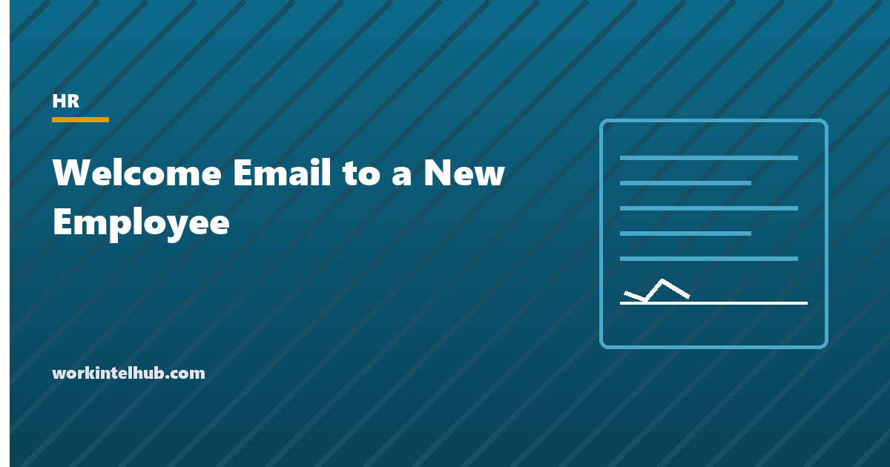

Welcome Email to a New Employee

A welcome email is the first message a new employee receives after accepting, and it does one job: it removes the uncertainty of the first day. When do I arrive, where, who will meet me, what do I bring. A new employee announcement does a different job: it tells the existing team who is coming, what they will do and why they should go and say hello. Both are short, both are frequently forgotten in the week before a start date, and both matter more than their length suggests, because the first impression of an employer is formed before the first day.
The generator writes four versions from the same details: the welcome email, the team announcement, a chat-length version and a first-day note from the manager. The rest of the page covers what each must contain, the timing, and the onboarding evidence that explains why the week before matters.
Welcome email and announcement generator
Nothing typed here leaves your browser. The welcome email answers the four questions every new hire has: when, where, who, and what to bring.
What each message must contain
| Message | Sent | Must include | Leave out |
|---|---|---|---|
| Welcome email to the new hire | 3 to 5 working days before the start, from the manager | Start date and time, place or link, who meets them, what to bring, what the first week looks like, a way to ask questions | Policies, forms and reading; those go in a separate onboarding email or the portal |
| Announcement to the team | The day before or the morning of the start | Name, role, team, start date, a line of background, who they report to, an invitation to say hello | Salary, personal details, anything the new hire has not agreed to share |
| Chat announcement | Morning of day one | Two sentences and a channel to find them in | Everything else |
| First-day note from the manager | Morning of day one | What today is for, that nothing is expected yet, when you will meet, lunch | Targets |
The welcome email is the one most often skipped, usually because the offer letter and the HR paperwork feel like enough. They are not the same thing: the offer letter is a contract document and the new hire forms are compliance. Neither tells someone where to park. Ask the new hire, in the welcome email or the call before it, what they are happy to have shared in the announcement; the fun fact is better supplied than invented.
Why the week before matters
Gallup's onboarding research finds that only about one employee in eight strongly agrees their organisation does a great job of onboarding, and that those who do are far more likely to say they are satisfied and to stay. The research points at the same few things: clarity about the role, an early relationship with the manager, and a sense of being expected. A welcome email delivers the third before the first day and sets up the first two. It costs ten minutes.
The announcement works on the other side of the relationship. Colleagues who know a person is coming, and what they will do, introduce themselves; colleagues who meet a stranger at the next desk do not. The buddy named in the generator is the single most reliable onboarding device in the research, because it gives the new hire someone to ask who is not their manager. The onboarding checklist holds the rest of the first month, and the 30-60-90 day plan the first quarter.
Two examples
Welcome email. "Hi Dana, we are really pleased you are joining us as Operations Coordinator on Monday, October 19. Here is what you need: arrive at 9:30 at reception, 120 Main Street, and ask for me. Bring photo ID and your I-9 documents; your laptop will be set up. Priya is your onboarding buddy and will take you to lunch. Your calendar for the week has a few introductions and nothing heavy. Reply here or call me on 555-0140 with any questions. See you Monday, Sam."
Announcement. "Hi everyone, Dana Whitfield joins the Operations team as Operations Coordinator on Monday. Dana comes to us from Northgate Logistics, where she ran the regional ops desk, and will be taking on scheduling and vendor coordination. She will be working with me, with Priya as buddy. Please stop by and say hello this week. Welcome aboard, Dana! Sam."
Key takeaways
- The welcome email answers four questions: when, where, who meets me, what do I bring. Send it three to five working days before the start, from the manager.
- The announcement tells the team the name, role, start date, a line of background and who to go and greet. Check what the new hire is happy to share.
- Keep policies and forms out of the welcome email; they belong in the onboarding portal.
- Only about one in eight employees rate their onboarding as great, and the ones who do stay longer. A named buddy is the most reliable device.
Frequently asked questions
What should a welcome email to a new employee include?
The start date and time, the place or video link, who will meet them, what to bring (ID and new-hire documents, usually), a sketch of the first week, the name of an onboarding buddy if there is one, and a way to ask questions before day one. Under 200 words, from the manager, three to five working days before the start.
What should a new employee announcement say?
Name, role, team, start date, one line of background or what they will be working on, who they report to, and an invitation to say hello. Keep personal details to what the new hire has agreed to share. The generator on this page writes the email and a two-sentence chat version.
When should the welcome email be sent?
Three to five working days before the start date, after the offer has been accepted and the paperwork sent separately. Earlier is fine for long notice periods; a second, short note the day before with the practical details repeated is common and welcome.
Who should send the welcome email?
The direct manager. HR can send the onboarding portal and forms; the welcome itself carries more weight from the person the new hire will work with. The announcement can come from the manager or a department head.
Should a new employee announcement include a fun fact?
Only one the employee supplied. Ask in the welcome email or the pre-start call what they are happy to have shared. A line about where they join from and what they will work on is enough if they would rather not.